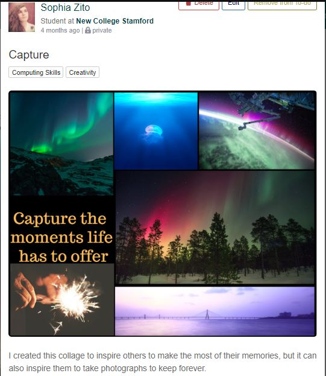
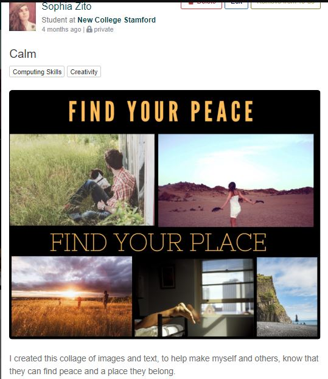
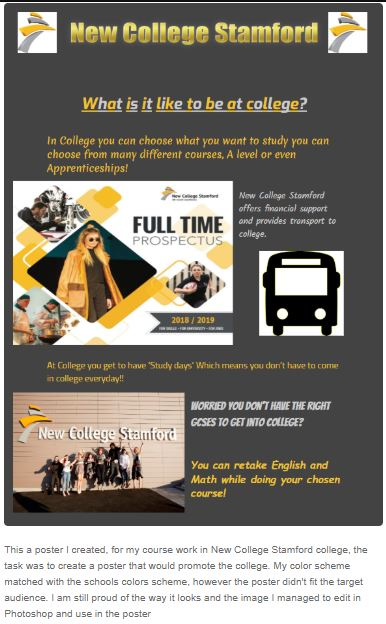

During our time at college we have been using a website called kloodle, Kloodle is a website sort of like linkedIn but a student version where you can create blogs, add images or videos and post them, you can also collect badges to get more profile points. Kloodle can create an online Cv for you with the details and information you fill in or from the things you have already uploaded.
Kloodle can be a great way for employers to spot you and see your account and possibly employ you.
Here is a few Images of my Kloodle account, I would have added link to it however you need to be logged into kloodle to access it.

This is the homepage of my Kloodle account as you can see the new thing I recentlyposted was an image and blog about my work experience at BGL
This is an image I created usin Canva.com, it is a gret site to create your own collages or many other grahic products.
Another image I created. I hope you like it.
This was one of the psoter's I created for a practice assignment in Unit 6, unfortunatelly this poster didn't fit the client requiremntshowever this was one of my favorite posters I created.
Here is a CV I created myself.
It has recently been updated with some new qualifications and work experience.